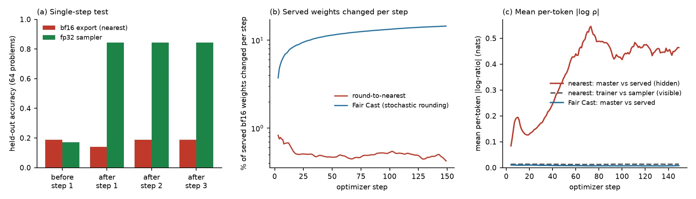
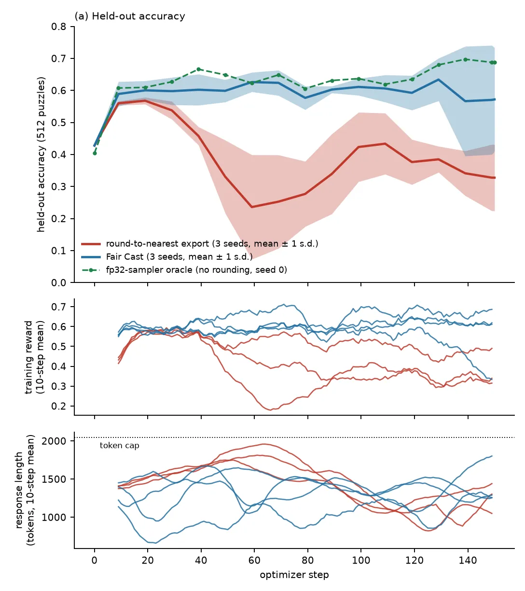
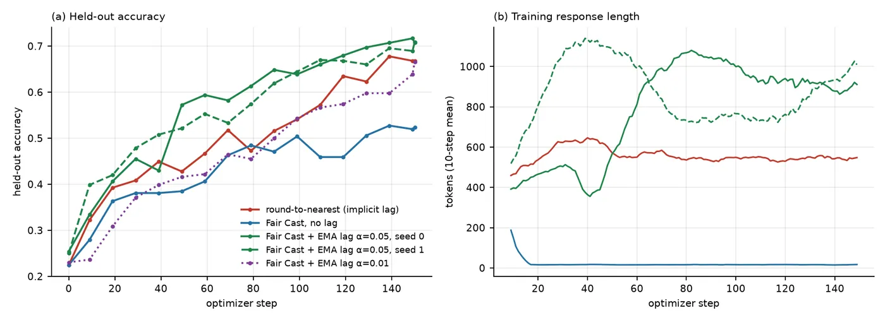

In one line: On single-GPU GRPO runs with Qwen3-0.6B to 4B, exporting the fp32 master to the bf16 sampler with stochastic rounding and computing the loss on that served copy, instead of round-to-nearest, ended more than one point ahead in held-out accuracy on 18 of 25 matched seed-pairs, within one point on 6 and behind on 1 (mean +6.1 points, median +3.1, much of it from three zebra-puzzle pairs).
How far to trust it: Believe the mechanism: the dead-zone arithmetic is exact, the fix is a few lines of released code, and the paper measures the lag directly (one optimizer step moves an fp32 sampler from 0.17 to 0.84 while the bf16 export stays at 0.19). Treat the size of the gain as provisional: one training implementation, models up to 4B, mostly single seeds, 14 of the 25 differences smaller than one standard error, a mean carried by three zebra pairs, and one task (list functions) where removing the lag cost 14.5 points until an explicit EMA lag was added back. The evidence, judged.
RL trainers keep fp32 master weights but sample from a bf16 copy made by round-to-nearest, which throws away every update smaller than half a bf16 gap, so the sampler serves a policy tens to hundreds of steps old; exporting with stochastic rounding (unbiased: the copy equals the master on average) and computing the loss on that exact served copy removes the lag (abstract and §1).
Redrawn from Figure 2. The loop runs clockwise: the optimizer updates the fp32 master, the export rounds it to bf16, the inference engine samples rollouts from the copy, the trainer computes the loss and the update lands on the master. Shaded: the two boxes Fair Cast changes.
You need: the GRPO loop and the importance ratio πnew/πold that PPO clips and TIS reweights (RL for LLMs); how bf16 stores a number, the gap between neighbouring values, round-to-nearest and stochastic rounding, and why mixed-precision training keeps fp32 master weights (Numerical computing, sections 2, 3 and 9); the straight-through estimator of quantisation-aware training (Quantization and Precision, section 5).
Modern RL stacks separate the optimizer from the sampler. Every open-source framework the authors examined (verl, TRL, OpenRLHF, slime, prime-rl, AReaL) makes the sampler's bf16 copy from the fp32 master by round-to-nearest (§1). bf16 keeps 7 significand bits, so near a weight w its values are u ≈ |w|/128 apart, and round-to-nearest maps an update Δ to zero whenever |Δ| < u/2 ≈ |w|/256 (§3). The master starts exactly on the bf16 grid, so this bites from the first step. (How the formats store numbers is owned by Numerical computing, which runs the same nearest-against-stochastic comparison on one weight.)
At the learning rates RL post-training uses (η ≈ 10−6 with Adam), almost every per-step update is that small. The paper's estimate from the measured distribution of Adam's normalized update is 0.3 to 0.7% of served weights changing per step on Qwen3-1.7B; measured, it is 0.4 to 0.5%. A weight drifting at mean speed |Δ̄| crosses a rounding boundary only every τ ≈ u/(2|Δ̄|) steps, 50 to 200 steps at these values, and with a decaying learning rate τ grows without bound (§3).
Computed by this page's rounding engine, which matches torch's bf16 cast bit for bit: Try other weights and learning rates in the simulator.
Muon makes it worse: its per-element updates are nearly uniform in size, so at η = 10−6 almost none cross a boundary. A controlled test isolates the mechanism (Figure 4a): on 64 knights-and-knaves problems, one optimizer step moved an fp32 sampler from 0.17 to 0.84, while the round-to-nearest bf16 sampler stayed at about 0.19 across three steps. In a full run, round-to-nearest left the sampler nearly frozen for about 20 steps (0.12, 0.15, 0.22 at steps 0, 9, 19) while Fair Cast moved at once (0.12, 0.51, 0.79).

The sampler draws from q, the trainer evaluates the loss at a bf16 version of θ, and the update lands on θ. Frameworks guard against the trainer and the engine disagreeing by computing the visible ratio πtrainer/πsampler and clipping (PPO), reweighting (TIS) or masking (IcePop) tokens where it strays (§2; the RL for LLMs page owns these corrections). But when the trainer's forward pass runs in bf16, by autocast or by evaluating the copy, both numerator and denominator are functions of q alone, so the ratio is about one however far θ has moved. The ratio that matters for the policy gradient, the hidden ratio πθ/πq, is never formed (Eq. 4).
The authors log both (§4, Figure 4c). On Qwen3-1.7B at η = 10−6 the mean per-token |log ρvisible| stays near 0.01 for the whole run, while the hidden one grows from 0 to 0.10 to 0.16 on MATH and about 0.45 on knights-and-knaves; under Fair Cast it stays near 0.01. The per-token effective sample size between master and served policy (Eq. 5) falls to 0.2 to 0.35 on tasks with 2,000-token responses and is about 0.9 with 500-token responses. The authors use it as a gauge of how far the served policy has fallen behind, not as a correction: a gradient at q with samples from q needs none.
This reconciles an earlier finding: lower learning rates were reported to reduce the training-inference mismatch (Zhang et al.). They reduce the visible ratio and increase the hidden one, because fewer updates clear the dead zone (§4). Prior work on the same threshold (the TRL team's analysis, PULSE) treated it as a communication artefact and made the trainer agree with the stale sampler; TRL now ships only the roughly 1% of bf16 elements that change each step as a sparse delta (§1).
1. Export with an unbiased rounding rule. For a master θ between neighbouring bf16 values ⌊θ⌋ and ⌊θ⌋ + u, stochastic rounding exports the upper value with probability p = (θ − ⌊θ⌋)/u. Then E[q] = θ exactly, and an update Δ raises the probability by Δ/u, so the served weight moves by Δ on average at any learning rate. The released kernel adds 16 uniformly random bits to the fp32 bit pattern and truncates the low 16 (sr_cast_bf16). The deterministic alternative, error feedback, keeps one fp32 residual per weight: qt = round(θt + rt−1), rt = θt + rt−1 − qt. The export errors telescope, so their sum stays within u forever (Eq. 6): unbiased over time rather than per export.
2. Compute the loss on the served copy. The trainer's forward pass uses the exact bf16 qt that generated the rollouts, and the gradient reaches the fp32 master through a straight-through estimator (the standard trick of quantisation-aware training, owned by Quantization and Precision). The sampled and the differentiated policy are then the same object. The change sits in the weight-export call, adds no hyperparameters and leaves the optimizer, loss, sampler kernels and framework alone (§5).
Why does a perturbation of at most |w|/256, harmless in a forward pass, matter in training? Round-to-nearest holds the same weights back in the same direction for 50 to 150 steps, so the served policy is a stale copy rather than a noisy one; and the optimizer never learns of it, because its gradient is computed on a copy that shares the rounding. Stochastic rounding makes the perturbation zero-mean and independent across steps (§9). Its single-export error is larger (up to u, against u/2), so the gain comes from removing the correlation, not from shrinking the error (§5).
Unbiasedness is about weights, not the policy: E[q] = θ does not give E[πq] = πθ, because the network is nonlinear. The paper's precise statements (§5): (i) rollouts are exactly on-policy for qt, whose log-probabilities enter the loss, so the policy-gradient estimate at qt has no importance-weighting error; (ii) πq differs from πθ by a rounding of each weight by less than u. Under round-to-nearest that error has the same sign step after step, so its first-order effect ∇π·(q − θ) accumulates over the lag; under stochastic rounding it is zero-mean and independent, the first-order term vanishes in expectation and a second-order term ½ tr(HΣ) with Σ ⪯ (u²/4)I remains; (iii) the straight-through gradient is the gradient at qt, not at θt, with bias bounded by the same rounding width. The residual is measured: |log(πθ/πq)| stays near 0.01 under Fair Cast. The objective becomes the expected reward of the exported model, Eq[J(q)], the model that samples and the model that is deployed.
Two implementations are equal in value: substitute qt for the parameters in the forward call, or write qt into the parameter storage for the step and restore the master before the optimizer update. With activation checkpointing only the second is exact, since the recomputed backward pass then also sees qt. The main runs used the first; the second gave the same results on Qwen3-0.6B (knights-and-knaves 0.977 against 0.967, GSM8K 0.756 against 0.742, seed 0; Table A1). The code README calls the second "the verified form".
Variants (§5): dithered error feedback (stochastic rounding of the error-fed value, residual still carried) and the EMA export of section 7.5.
GRPO-style clipped policy gradient, group size 8, 24 prompts per step, 150 optimizer steps (500 for long runs), rollouts up to 2,048 tokens. Each arm runs on one H100, a vLLM sampler and a Hugging Face trainer sharing the device. Models: Qwen3-0.6B, 1.7B (default) and 4B, plus OLMoE-1B-7B and Qwen2.5-1.5B-Instruct; AdamW at η = 10−6 by default, Muon where stated. Tasks: Reasoning Gym logic puzzles (knights-and-knaves, zebra puzzles, list functions, string manipulation, Countdown), MBPP+ and HumanEval+, MATH, GSM8K and games with exact solvers (Nim). Evaluation: greedy decoding of the served copy on a held-out set every 10 steps, 512 problems where available. One seed per arm unless stated; a seed changes the trainer and sampler randomness, never the order of training prompts (§6).
Clip 0.2; AdamW β = (0.9, 0.999), weight decay 0.01; Muon at 10−6 with momentum 0.95 and RMS-matched updates (0.2·√max(m, n)) on 2-D hidden weights, AdamW for embeddings, norms and the output head; temperature 1.0; 6,144 tokens for Nim; the 1.7B MATH levels 3 to 5 pair ran 300 steps with cosine decay to 10−7; lag 1 between sampler and trainer (Table A1). The harness multiplies Muon's learning rate by a default factor of 20, but every Muon configuration in the repository sets it to 1.0, matching the text. MBPP+ shares 154 of its 378 task ids with the MBPP split used for training, so MBPP+ is scored on the other 224 (121 of the first 128 for the seed-0 pair); HumanEval+ has 164 problems; the 1.7B MATH and Countdown runs used 128 (§6). Appendix B prints one held-out prompt each for zebra, knights-and-knaves and Nim.
It collapses (§7.1). Error feedback without the served-copy forward fell to 0.00 held-out accuracy in 4 of 4 long runs; stochastic rounding without it degenerated on Qwen3-0.6B into token loops on GSM8K (0.61 to 0.13 by step 19) and unterminated reasoning on MATH (0.002). Each export now flips many weights at random, the trainer never sees those flips, so the rounding noise enters the visible ratio: the clip fraction rose in step with the flip fraction, and the gradient vanished once every group was uniformly wrong.
| Trainer forward on the fp32 master | Trainer forward on the served copy | |
|---|---|---|
| Round-to-nearest export | today's default: the hidden lag | the same policy: both copies sit downstream of the same rounding (0.6B: knights-and-knaves 0.889 against 0.865, GSM8K 0.705 against 0.742) |
| Unbiased export (SR or EF) | collapse: EF 0.00 in 4 of 4 runs; SR 0.6B GSM8K 0.13, MATH 0.002 | Fair Cast: stable, learns faster |
Table 1, held-out accuracy of the served copy. The two aligned cells are stable, the two crossed ones are not. The "same policy" pair differs by +2.4 and −3.7 points, inside the 3-point noise of one comparison at 512 problems.
Zebra puzzles (Qwen3-1.7B). Round-to-nearest learns for about twenty steps, then collapses on every seed, from a peak of 0.57 ± 0.01 to 0.33 ± 0.10 (3 runs). Between steps 30 and 60 its responses lengthen into the 2,048-token cap (held-out truncation 0.47 to 0.89) while training reward falls: a policy pushed toward longer derivations by rewards computed on a model it no longer matches. A DAPO-style truncation penalty on the round-to-nearest arm did not prevent the collapse (final 0.45). Three of four Fair Cast runs ended at 0.62 to 0.70 and tracked an fp32-sampler oracle (0.69); the fourth, a repeat of seed 0, held 0.53 to 0.63 for 130 steps and then fell to 0.34 in its last fifteen, so the four-run mean is 0.57 ± 0.16 (§7.2, Figure 5).

Knights-and-knaves. Here the lag costs speed. With AdamW at 1.7B, Fair Cast reached 0.88 at step 9 and about 0.97 by step 40; round-to-nearest needed about 40 more steps and ended 3.7 points lower. With Muon, whose updates almost all fall below u/2, Fair Cast led at all 15 checkpoints on both seeds (0.988 ± 0.003 against 0.907 ± 0.016). At 0.6B the gain is 10.2 points; at 4B both reach the ceiling (0.992 against 0.988).
Nim (6,144-token cap). Both arms gain about 38 points; Fair Cast leads by 10 to 30 points through step 100 and peaks at 0.736 against 0.596, then the two converge (0.580 against 0.570 at step 150). The lag is a delay here, not a different destination.
Table 2 gives endpoints after 150 steps for thirteen configurations; Fair Cast is ahead at nearly every checkpoint, by the most on long-rollout logic and by a few points on the standard benchmarks (Figure 7). On Qwen3-0.6B, with three seeds each, it gains 2.7 points on MATH levels 3 to 5 and 5.1 on GSM8K, and the curves separate in the first 30 steps, where the dead zone withholds the largest share of the optimizer's motion. Counting each seed separately, plus the list-functions pair of section 7.5, gives 25 matched pairs: ahead by more than one point on 18, within one point on 6, behind on 1, mean +6.1 points (§7.3). The authors released the per-pair table, so every pair is plotted below.
From the code repository's results/TABLE2_PAIRS.md; MBPP+ endpoints also checked against its released held-out curves. Grey band: one standard error of a difference between two evaluations, √(2·0.25/n), for the problems each pair was scored on (3.1 points at 512, 4.7 at the 224 held-out MBPP+ problems, 5.5 at HumanEval+'s 164, 6.2 at 128). The paper gives the 3 and 6 point figures itself (§9).
Two things the plot makes plain. The gain is real in direction: 20 pairs positive, 4 negative, 1 zero (two-sided sign test p = 0.0015 if the pairs were independent, which they are not quite). But 14 of the 25 differences are smaller than one standard error, the three zebra pairs supply 96.9 of the 152.5 summed points, and without them the mean is +2.5. The released zebra seed-0 pair uses the first Fair Cast run (0.623), not the repeat that fell to 0.34; with the repeat the mean is +5.0.
The fp32 master you save and the bf16 copy that was trained and evaluated are different objects. Under round-to-nearest they agree at step 0 and then drift apart, by up to 50 points on HumanEval+ (served 59.8, master 9.1 at step 99) and 20 to 30 on MBPP+. The gap is not monotone: the withheld residual is flushed into the copy only when weights cross boundaries, so the master can be 30 points below its export at one checkpoint and level 50 steps later. Of 9 round-to-nearest runs with master evaluations, 5 showed a gap of at least 12 points at some checkpoint and 2 at the final one; under Fair Cast master and export agreed within 3 points at every checkpoint of 12 runs (§7.4, Figure 8).
| Saved fp32 master | bf16 | fp16 | FP8 via bf16 | FP8 via fp16 |
|---|
Table 3, held-out accuracy (%) of one saved master exported four ways. Formats at or coarser than bf16 discard the same residual the sampler never saw and reproduce the training score; finer formats (fp16, fp32 evaluation, continued training) inherit it. The fp16 export of the HumanEval+ master wrote responses of 1,679 tokens on average against 344 for bf16: a different model.
The practical rule: evaluate and ship the served copy; deploy from bf16, or FP8 calibrated on bf16; do not ship fp16 or resume training from the fp32 master after round-to-nearest training without re-evaluating. The text says such a pipeline "can deploy a model 30 to 40 points worse" than its curve; in Table 3 that holds for HumanEval+ (42.0 and 30.4 points lost), while Countdown loses 11.7.
Round-to-nearest passes a weight's motion on only once it has built up past a boundary, so the served policy is a low-pass-filtered master: fast, small changes are suppressed and only sustained drift gets through. That is a bias (the lag) and also a regularizer (the sampler cannot commit to whatever the current step's reward favours). Fair Cast removes both. The filter can be restored explicitly by exporting an exponential moving average mt = (1 − α)mt−1 + αθt with the same unbiased rounding and served-copy training; α sets a lag of about 1/α steps in place of an accidental one that depends on each weight's magnitude (§7.5).
Round-to-nearest, by 14.5 points: 0.668 against 0.523. Fair Cast committed to answer-only outputs by step 29 (median response 13 characters, every sample a bare boxed answer), while round-to-nearest kept writing derivations of about 600 tokens. With the EMA export at α = 0.05 Fair Cast reached 0.707 and 0.709 on two seeds, above round-to-nearest, with full derivations; α = 0.01 gave 0.666 (§7.5, Figure 9). This is the one pair of the 25 where Fair Cast is behind.
The authors have not characterised in advance which tasks need the explicit lag (§9), and the conclusion speaks of "two configurations" where removing the lag is harmful while section 7.5 reports one.

Transfer. MATH-trained 1.7B checkpoints evaluated on competition problems (8,192 tokens, temperature 1, avg@16): on the cosine-schedule pair Fair Cast scored 0.204 against 0.152 on AIME24, 0.548 against 0.495 on AMC23, 0.790 against 0.754 on MATH-500, and GSM8K was unchanged at 0.83; on the level-5 pair the two were within noise (AIME24 0.163 against 0.165) (§7.6).
Ablations (§7.7). Stochastic rounding and error feedback tie on knights-and-knaves and HumanEval+; error feedback is stronger only on the 500-step Countdown run. Fair Cast composes with TIS, which corrects version lag, and the effects add. An FP16 sampler shrinks the dead zone eightfold but does not remove it and risks overflow. Raising round-to-nearest's learning rate closes part of the speed gap but at 3 × 10−6 and 10−5 produced two MATH collapses. On OLMoE-1B-7B and Qwen2.5-1.5B-Instruct (MATH, 128 problems) the two rules were within noise, Fair Cast never worse.
Cost. One full export of Qwen3-1.7B on an H100: round-to-nearest 4.3 ms, stochastic rounding 21.7 ms with the bit-trick kernel (136.6 ms for a naive seven-operation one), error feedback 37.2 ms plus 6.9 GB of fp32 residuals. Against optimizer steps of 31 to 130 s that is under 0.1% for stochastic rounding (error feedback reaches 0.12% at the fastest step). Time per step is identical when output lengths match (knights-and-knaves 56.2 against 56.0 s). One real cost: Fair Cast changes 2 to 15% of served weights per step instead of 0.4 to 0.5%, so delta-sync schemes that ship only changed elements compress several times less (§9).
What holds up. The mechanism is arithmetic, not a fitted claim: round-to-nearest provably holds back any accumulated update below u/2, and this page's engine (bit-identical to torch's cast on 1,993 test values) reproduces the dead zone from the definition. The paper then measures the consequence three independent ways: the single-step test (an fp32 sampler moves from 0.17 to 0.84, the bf16 export does not), the per-step fraction of changed weights, and the hidden ratio against the visible one (Figure 4). The crossed cells of Table 1 are the right controls: training on the served copy alone changes nothing, unbiased export alone collapses, which separates the two halves. The fix is a few lines of released, MIT-licensed code, and every Table 2 mean and standard deviation recomputes from the released per-pair table (all 13 rows; tables tab).
What to discount.
Verdict. The diagnosis is solid and cheap to check in any stack: count how many served weights change per step. The fix costs milliseconds and is the right default on correctness grounds alone, since it makes the trained, sampled and deployed model the same one. How much accuracy it buys is less settled: large on the long-rollout zebra and knights-and-knaves runs, a few points or nothing on short-answer benchmarks, negative where the accidental lag was doing useful smoothing.
Replace the weight-sync cast (master.to(torch.bfloat16)) with sr_cast_bf16, and make the trainer's forward pass use the exact served values with a straight-through gradient (served_forward or ste_params); both come in the torch-only faircast package with a 60-line GRPO example (README). It pays off when the learning rate is small relative to weight magnitudes (full-parameter RL at about 10−6, Muon, decaying schedules) and on long rollouts; it buys little when updates already clear the dead zone. Watch for tasks where answers collapse to short outputs, and try the EMA export there.
harness/drift_rl.py: sync_mode "cast", "sr", "ef", "efsr"; forward_mode "autocast", "ste", "ste_swap"; Fair Cast is "sr" with "ste_swap"; ema_export: 0.05 for the explicit lag), the 87 per-arm configurations, the pair table and the MBPP+ curves.arXiv v1 of 29 October 2026 is the only version. The repository's last commit is 7c213b2 (29 October 2026). It holds the package, harness, configurations, the 25-pair table and the MBPP+ held-out curves; the per-step training logs and held-out evaluations the figure scripts read (results/logs, results/evals.json) are not in it, and the paper's promised checkpoints and held-out responses were not found. No follow-up paper, framework adoption or independent replication was found by this date. Two unmerged prime-rl pull requests had proposed stochastic rounding for FP8 export before the paper, with no learning results (§8).
The training-inference mismatch has been one of 2025 and 2026's busiest RL-infrastructure topics: TIS (Yao et al.), IcePop, the FP16 proposal (Qi et al.), learning-rate schedules (Zhang et al.) and rounding-location alignment (Ke et al.) all target the visible ratio. This paper's point is that a second mismatch sits upstream of all of them, at the export, and that the same bf16 arithmetic has now been reported in ternary quantisation-aware fine-tuning (Sahai et al.) and in multi-teacher on-policy distillation (Zhu et al.). Whether it matters at frontier scale is open: the lag depends on the ratio of learning rate to weight size, and frontier runs differ in learning rates, asynchronous samplers and FP8 exports.
One weight of the fp32 master receives a small update every optimizer step, and after every step the export makes its bf16 copy. Round-to-nearest, stochastic rounding and error feedback are computed on the actual float32 bit patterns, exactly as the paper's code does (this page's round-to-nearest matches torch's bf16 cast bit for bit). Change the weight's size, the learning rate and how steady the update is, then press Play to watch the copies follow, or fail to follow, the master.
The engine (src/parts/20_js_sim.js, the same file in the page and in the checks) implements round-to-nearest as round half to even on the low 16 bits of the fp32 pattern, stochastic rounding as "add 16 random bits, truncate" (the paper's sr_cast_bf16) and error feedback as the paper's recursion. check_sim.mjs and check_sim.py: 1,993 fp32 values (random bit patterns and exact midpoints) cast identically to ml_dtypes' bfloat16, which rounds like torch; for 300 values, enumerating all 65,536 noise patterns gives a probability of rounding up equal to the fractional position with zero error, so the expected copy equals the master exactly; the gap function equals 2⌊log₂|w|⌋ − 7. The master is accumulated in fp32, as a trainer does. The 256-run average uses independent noise per run.
Every table that carries the argument, transcribed with the printed precision (src/mk_tables.py from the arXiv HTML and the code repository), and every derived number recomputed (src/recompute.py).
| Task | Model | n | Nearest | Fair Cast | Δ | SE of Δ |
|---|
Table 2: mean ± standard deviation over n seeds, Δ in points. The last column, added here, is one standard error of a single difference at that task's evaluation size, divided by √n for multi-seed rows; zebra uses 3 and 4 runs. Every mean and standard deviation recomputes from the per-pair table below (zebra's Fair Cast mean includes the repeated seed-0 run).
| Task | Model | Seed | Optimizer | Scored on | Nearest | Fair Cast | Δ |
|---|
results/TABLE2_PAIRS.md of the code repository at commit 7c213b2. "Scored on" is the number of problems actually scored: the repository's n_eval column says 512 for MBPP+ seeds 1 to 3, but MBPP+ is scored on its 224 held-out problems (121 for seed 0), as the released curves confirm.
| Arm | bf16 | fp16 | FP8 via bf16 | FP8 via fp16 |
|---|
Table 3, held-out accuracy (%).
| Check | Where | Paper | Recomputed |
|---|
Every link opens in a new tab. Reading time of the resources below: 3h 20m.
arXiv preprint, the paper itself; the HTML version has the anchors this page links to. abstract page, PDF.
(45 min)
The faircast package (sr_cast_bf16, ef_cast_bf16, the straight-through served-copy forward; torch only), a 60-line GRPO example on GSM8K, the Modal training harness with the 87 per-arm configurations, the 25 matched pairs behind Table 2 and the MBPP+ held-out curves (MIT; read at commit 7c213b2 of 29 October 2026). The per-step logs the figure scripts read are not in the repository.
(30 min)
Hugging Face TRL team (Dirhoussi, Gallouédec et al.), April 2026: the paper's reference [1]: the same |w|/(256η) threshold and the "nearly static model", with bf16-autocast training as the remedy (the trainer is made to agree with the stale sampler).
(20 min)
Hugging Face TRL team, May 2026: the infrastructure built on the same sparsity: ship only the roughly 1% of bf16 elements that change each step (reference [25]).
(15 min)
Feng Yao et al., 2025: truncated importance sampling (TIS) for the engine-trainer mismatch: the visible ratio this paper says cannot see the export lag.
(20 min)
Qi et al., arXiv 2510.26788, 2025: the FP16 alternative; this paper's Table 3 argues that an fp16 export of a round-to-nearest-trained master inherits the drift.
(40 min)
Sahai, Raj and Srivastava, arXiv 2610.07853, 2026: the same arithmetic in quantisation-aware fine-tuning, where it hypothesised the RL exposure this paper tests (reference [26]).
(30 min)
GRPO's paper; every run here is a GRPO-style clipped policy gradient.
low-precision numerics at scale (FP8 training with fp32 master weights), the other side of the same master-and-copy split.
the Qwen3-0.6B, 1.7B and 4B models every main result uses.
the paper predicts (untested) that separately served LoRA adapters, trained at about ten times the learning rate, would largely escape the dead zone.
how far off-policy data hurts; the export lag makes nominally on-policy RL slightly off-policy.
owns GRPO, the importance ratio and its clip, and the engine-trainer mismatch corrections (TIS, MIS, IcePop) that this paper says cannot see the export lag.
low-precision formats and training recipes, quantisation-aware training and its straight-through estimator, used here to train on the served copy.
owns how bf16 encodes a number, the gap between neighbours, round-to-nearest and stochastic rounding, and fp32 master weights in mixed precision.
This page is one row of the Papers database; its properties (Paper, Takeaway, Topics, Year) live there.